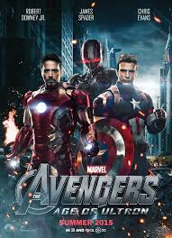

Los Vengadores
 son un equipo ficticio de superhéroes que aparecen en cómics estadounidenses publicados por Marvel Comics. El equipo hizo su debut en The Avengers #1 (septiembre de 1963),3creado por el escritor y editor[cita requerida] Stan Lee y el artista/copiloto Jack Kirby. Los Vengadores es la renovación de Lee y Kirby de un equipo anterior de superhéroes, Escuadrón Todos los Ganadores, que apareció en la serie de cómics publicada por el predecesor de Marvel Comics, Timely Comics.
son un equipo ficticio de superhéroes que aparecen en cómics estadounidenses publicados por Marvel Comics. El equipo hizo su debut en The Avengers #1 (septiembre de 1963),3creado por el escritor y editor[cita requerida] Stan Lee y el artista/copiloto Jack Kirby. Los Vengadores es la renovación de Lee y Kirby de un equipo anterior de superhéroes, Escuadrón Todos los Ganadores, que apareció en la serie de cómics publicada por el predecesor de Marvel Comics, Timely Comics.
AVENGERS Age of trom
La secuela fue anunciada en mayo de 2012, luego del estreno exitoso de The Avengers. Whedon, director de la primera película, regresó en agosto y se fijó una fecha de estreno. Para abril de 2013, Whedon había completo un borrador del guion, y el casting comenzó en junio con la renovación del contrato de Downey. El rodaje de la segunda unidad comenzó en febrero de 2014 en Sudáfrica y la fotografía principal se realizó entre marzo y agosto de 2014. La película se rodó principalmente en los Estudios Shepperton en Surrey, Inglaterra, con escenas adicionales rodadas en Italia, Corea del Sur, Bangladés, Nueva York, y varias ubicaciones de Inglaterra. En posproducción, la película fue convertida a 3D y se añadieron más de 3000 tomas de efectos visuales. Con un presupuesto estimado de $365 millones, es la segunda película más costosa de la historia.
Avengers Infinty war
 Es la secuela de The Avengers (2012) y Avengers: Age of Ultron (2015), ubicándose como la décimo novena película del Universo cinematográfico de Marvel. Dirigida por los hermanos Anthony Russo y Joe Russo, a partir de un guion escrito por Christopher Markus y Stephen McFeely, cuenta con un reparto coral que incluye a Robert Downey Jr., Chris Evans, Chris Hemsworth, Mark Ruffalo, Scarlett Johansson, Don Cheadle, Benedict Cumberbatch, Tom Holland, Chadwick Boseman, Paul Bettany, Elizabeth Olsen, Anthony Mackie, Sebastian Stan, Danai Gurira, Letitia Wright, Karen Gillan, Dave Bautista, Zoe Saldana, Vin Diesel, Bradley Cooper, Josh Brolin y Chris Pratt. En Avengers: Infinity War, Los Vengadores y los Guardianes de la Galaxia intentan evitar que Thanos obtenga las poderosas Gemas del Infinito.6
Es la secuela de The Avengers (2012) y Avengers: Age of Ultron (2015), ubicándose como la décimo novena película del Universo cinematográfico de Marvel. Dirigida por los hermanos Anthony Russo y Joe Russo, a partir de un guion escrito por Christopher Markus y Stephen McFeely, cuenta con un reparto coral que incluye a Robert Downey Jr., Chris Evans, Chris Hemsworth, Mark Ruffalo, Scarlett Johansson, Don Cheadle, Benedict Cumberbatch, Tom Holland, Chadwick Boseman, Paul Bettany, Elizabeth Olsen, Anthony Mackie, Sebastian Stan, Danai Gurira, Letitia Wright, Karen Gillan, Dave Bautista, Zoe Saldana, Vin Diesel, Bradley Cooper, Josh Brolin y Chris Pratt. En Avengers: Infinity War, Los Vengadores y los Guardianes de la Galaxia intentan evitar que Thanos obtenga las poderosas Gemas del Infinito.6
Avengers: Endgame
La película fue anunciada en octubre de 2014 como «Avengers: Infinity War – Part 2». Los Hermanos Russo se unieron para dirigir la película en abril de 2015 y en mayo Markus y McFeely firmaron para escribir el guion. En julio de 2016, Marvel quitó el nombre de la película, refiriéndose a ella simplemente como Película sin título de Avengers. La filmación comenzó en agosto de 2017 en Pinewood Studios en el Condado de Fayette, Georgia, al mismo tiempo de la grabación de Avengers: Infinity War, y concluyó en enero de 2018. La grabación de algunas escenas adicionales tuvieron lugar en el centro y la zona metropolitana de la ciudad de Atlanta.
Con el teaser tráiler lanzado el 7 de diciembre de 2018 se reveló que la fecha de estreno se había atrasado hasta el 26 abril de 2019.4 La cinta fue lanzada en Estados Unidos el 26 de abril de 2019, en formato IMAX y 3D.